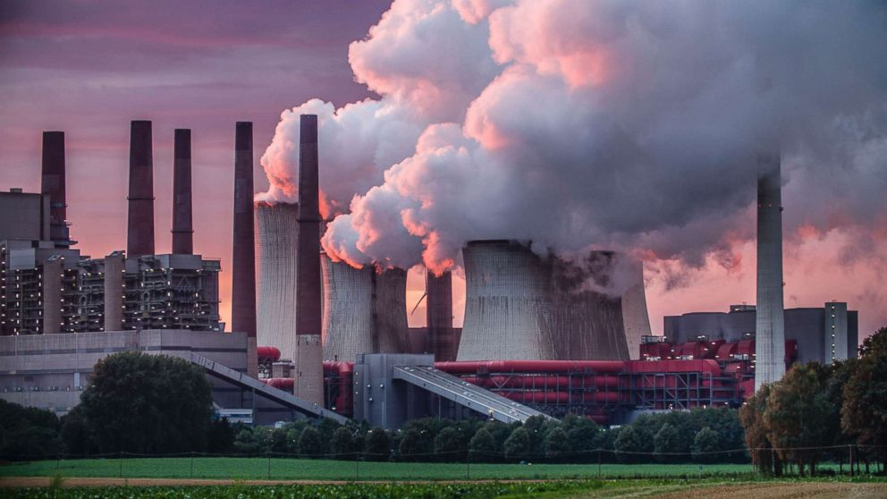
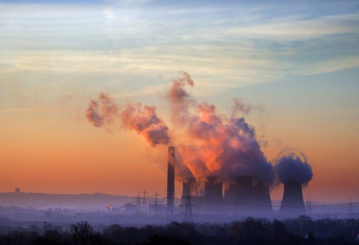
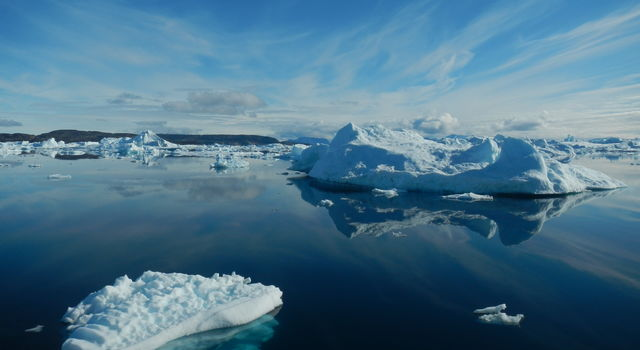
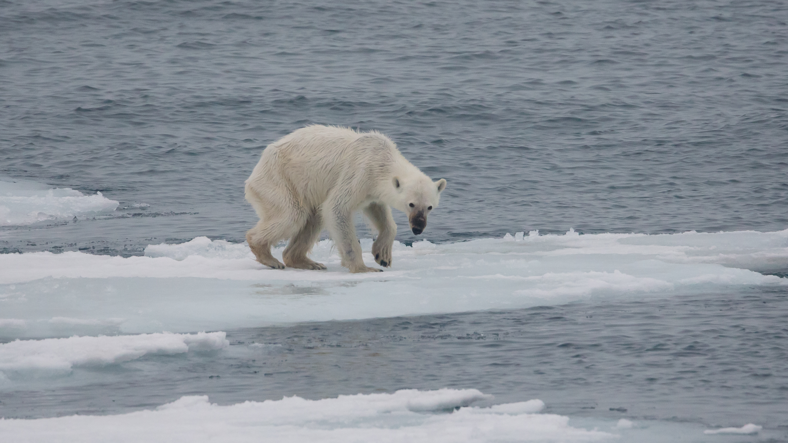

The social cause I have choosen to research about for my MMP 100 final project is global warming.
I am promoting global warming because it is a cause I have always been interested in. I think people do not really pay attention to this social cause or they tend to push it aside even though it is something that really needs to be addressed.
"Over the past 50 years, the average global temperature has increased at the fastest rate in recorded history."
What causes global warming?
Global warming is caused due to the increase use of fossil fuels and other gases in greenhouses. Not only are these greenhouse gases being released into the atmosphere, but they're also being trapped inside. This causes the Earth to become very warm which then comes to effect us, and all of the wildlife.

Photo credit: Schroptschop-Getty Images

Photo credit: Chris Conway-Getty Images
What are the effects of global warming?
-A lot of wildlife is affected because they are not able to adapt to the changing climates.
-The polar regions are affected because the ice caps are melting, which will cause the sea level to rise.
-Freshwater is affected because now with the ice caps melting, there is more flooding and more extreme rainfall patterns.
-Oceans are affected because they help absorb carbon dioxide to help it from getting to the atmosphere. And since they have to absorb more carbon dioxide, the ocean is becoming more acid.
-Human health is also affected by the climate change because of more wildfires, more diseases caused by food, water, insects, and also a decreased in air quality.

Photo credit: NASA/JPL-Caltech

Photo credit: Andreas Weith
What animals are impacted by global warming?
There are various types of animals that are impacted by global warming here are just a few:
-Polar bears: They're losing ice glaciers which they need in order to hunt and live on. This is causing their population to decrease rapidly.
-Snowshoe Hares: These hares turn white in the winter to blend in with the snow, and to hide from predators. But since snow areas are melting, they don't completely change to blend in with the snow. This leaves them vulnerable and this is causing a decrease in their population.
-Sea turtles: Global warming causes us to experience much more extreme weather patterns, which can destroy the beaches where turtles lay their eggs. The rising temperature can also destroy the turtles nest since their eggs don't do well against very hot sand.
-Moose: Rising temperatures, increase parasite populations, which then attack moose and feed on their blood. This weakens their immune system and eventually kills them.
Here's a couple of more videos explaining more about how global warming is impacting different animals:
This organization helps address this issue by increasing the usage of renewable energy throughout cities, states, nations, and promote electric vehicles. They also help protect the health of low income communities, protect people in other countries who aren’t prepared for the major heat that occurs due to climate change, etc.
Some ways they recommend you can get involved is by urging your governor to lead on a climate action, and contact your local congressman.
This organization works towards helping people adapting to the new climate changes, and is hoping to find a solution to the changing climate. They also help train and support volunteers into building relationships with elected officials.
Some ways this organization says that you can help is by establishing a proper relationship with your elected officials so you can encourage them into preserving a healthy climate. And you can also write, email, or call congress about this issue.
This organization helps by trying to stop greenhouse gas emissions, trying to have a global shift into renewable energy, trying to stop Trump and his fossil fuel agenda, and by trying to honor the Paris Agreement.
Some ways that you can get involved is by joining the project to help be part of the solution. You can also join their Climate Reality Leaders project so that you can fight for a solution to this problem, and help educate others on this topic.